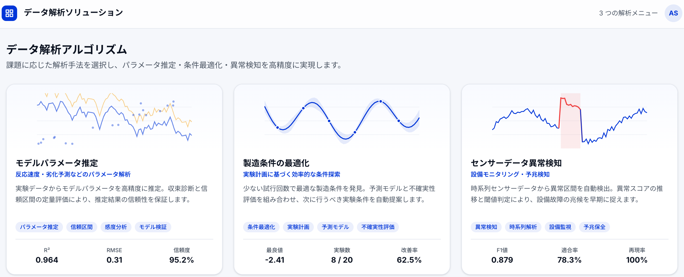

Algorithm Development
データ解析アルゴリズム開発
課題定義からデータ探索、モデル設計、実装までを伴走し、現場運用に耐える解析アルゴリズムを構築します。
概要
PoC止まりになりやすい解析テーマを、運用設計とセットで形にします。 目的に合わせた評価指標とアルゴリズムを設計し、再利用可能な解析基盤を提供します。
導入効果
- 目的に合ったモデル設計で精度と説明性を両立
- 運用まで見据えた実装で継続利用が可能

顧客の業界
- 研究開発
- 製造
- 材料
- 化学
- 分析計測
解決する課題
Before
- 既存手法では精度や説明性が不足
- データ特性に合ったモデル設計ができない
- PoC止まりで運用に落とし込めない
After
- 目的に合わせたモデルを設計・評価
- データ理解に基づき再現性を確保
- 運用に耐える実装とドキュメントを提供
ソフトウェアの機能説明
課題整理・KPI設計
目的と評価指標を定義し、最適な解析アプローチを設計します。
データ探索・特徴量設計
データ特性を分析し、モデルに適した特徴量を設計します。
モデル検証・実装
精度評価と運用を見据えた実装・ドキュメント化を行います。
入力形式
時系列データ、画像、センサーデータ、ログデータ
出力形式
モデルファイル、API仕様、評価レポート、推論パイプライン
連携先
既存システム、エッジデバイス、クラウド基盤
技術要素
- 統計解析
- 機械学習
- 最適化
アウトプット例

お問い合わせ
目的とデータ状況に合わせて、最適な解析設計をご提案します。
- 解析テーマの課題整理とPoC設計
- 既存モデルの精度改善
- 運用設計と実装支援